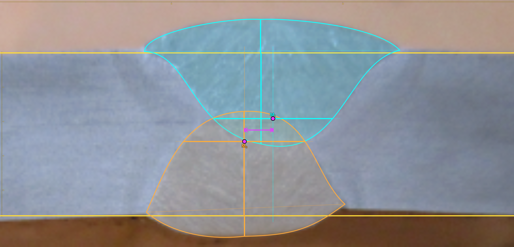
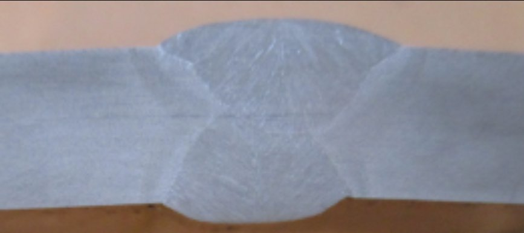
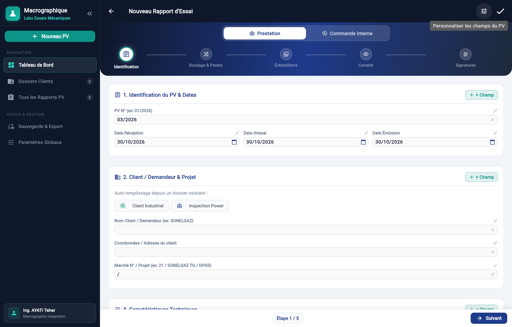
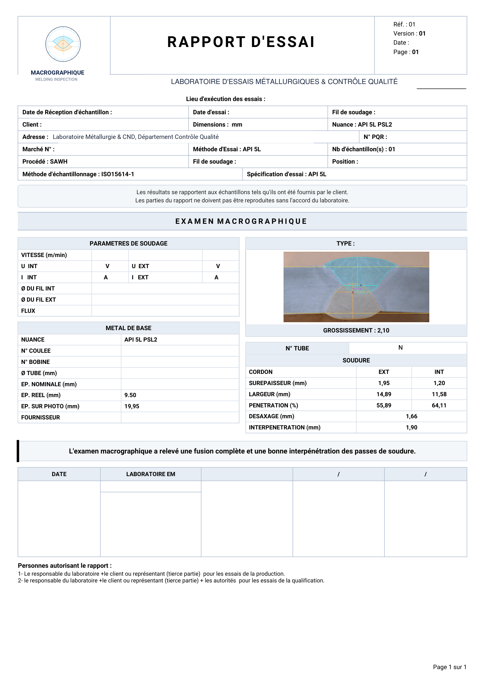

La rigueur du procès‑verbal macrographique.
Traçabilité certifiée et calculs dimensionnels pour laboratoires d’essais métallurgiques.


Inspection et laboratoires
Métrologie optique et rigueur.
Étalonnage optique et cotation vectorielle
Étalonnage micrométrique et tracé direct des cordons au centième.

100% Hors-ligne & SQLite local
Données locales sans fuite cloud.
Couverture universelle des soudures
Adapté aux joints bout à bout, en angle et multipasses : procédés SAWH, SAWL, TIG, MIG/MAG et électrode.
Révélation nital & analyse ZAT
Contrôle de la zone fondue, de la zone affectée thermiquement et détection des défauts d’alignement.
Génération du PV officiel certifié
Édition automatisée en format PDF normalisé, prête pour les contrôles qualité et auditeurs tiers.
Protocole en 5 étapes
Du contrôle matière aux signatures certifiées.

Identification et Nuances
Numéro unique, client et nuances certifiées.
Modèle de procès‑verbal
Édition conforme API 5L et ISO 15614.

Cotation de l’échantillon
Relevé des cordons et métal de base.
| Mesure cordon | Cordon EXT | Cordon INT |
|---|---|---|
| Surépaisseur | 1,95 mm | 1,20 mm |
| Largeur cordon | 14,89 mm | 11,58 mm |
| Pénétration | 55,89% | 64,11% |
Distributions officielles
Exécutables sans dépendances.
Accès Web Direct
Chrome, Edge ou Firefox.
Windows 64 bits
Installeur pour Windows 10 et 11.
Android
Paquet APK pour tablettes de contrôle qualité.
Retours d’expérience
Vos retours enrichissent le logiciel.